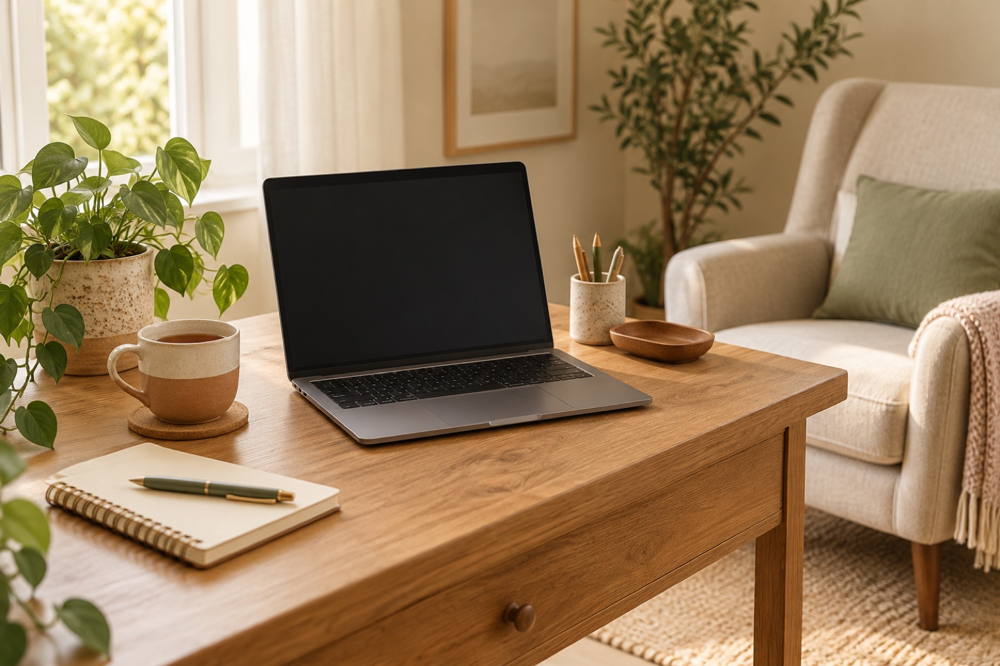

Ольга Ветрова
спокойно и в вашем темпеПомогаю разобраться с тревогой, сложностями в отношениях и выгоранием. Практика с 2017 года, консультирую взрослых из любой точки мира
Что из этого про вас?
Мысли крутятся по кругу, трудно расслабиться и уснуть
Ищем, что запускает тревогу, и учимся замечать её раньше, чем она накроет. Подбираем способы, которые работают именно у вас
Ссоры идут по одному сценарию, сложно сказать о своих чувствах
Разбираем, что происходит между вами, и пробуем говорить по-другому. Можно прийти одной или одному, можно вдвоём
Работа перестала радовать, сил нет даже на отдых
Находим, куда уходят силы, и возвращаем опору и понятные границы между работой и жизнью

Я психолог-консультант, работаю в когнитивно-поведенческом подходе. На сессиях мы не ищем виноватых. Разбираем, что с вами происходит, и подбираем шаги, которые подходят именно вам
Три шага до первой встречи и дальше
- Пишете в TelegramКоротко, можно одной фразой. Отвечаю в течение дня и предлагаю время
- Первая встреча, 50 минутЗнакомимся, обсуждаем запрос и решаем, подходим ли мы друг другу
- Встречи раз в неделюОнлайн в Zoom или Telegram. Будни 10:00–20:00 по Москве, суббота 10:00–14:00
Как понять, что мне нужен психолог?
Если что-то мешает жить так, как хочется, и самому справиться не получается, этого достаточно, чтобы прийти
Что, если мы не подойдём друг другу?
Это нормально. Скажите об этом прямо, и я подскажу, к кому ещё можно обратиться
Это конфиденциально?
Да. Всё, что вы рассказываете, остаётся между нами. Исключение одно: угроза жизни
Слова клиентов
«Пришла с паникой перед каждым рабочим созвоном. Через пару месяцев заметила, что готовлюсь к ним спокойно. Ценю, что на сессиях не было оценок»
Анна К.
«Мы с мужем пришли на грани развода. Научились договариваться без крика, это для нас главное»
Ирина и Павел
«Думал, что психолог будет давать советы. А получилось, что я сам разобрался, почему так устаю на работе»
Дмитрий
Подышите вместе с кругом
Вдох на 4 счёта, выдох на 6. Четыре круга, меньше минуты
Напишите, с чего хотите начать
Можно коротко: «Хочу на первую встречу». Отвечу в течение дня и предложу время
Написать в Telegram